Practice Log n Share
2026年9月
概要
練習中はワンタップで記録し、レッスンではその画面をそのまま先生に見せる。サックスを習う自分のために、iPhoneアプリを企画・デザインし、AIと協働して実装した。


- 役割
- 企画、UX/UIデザイン、実装（Claude Code・Codexと協働）
- 期間
- 2026年9月
- 技術
- React・TypeScript、Swift（WKWebView、Live Activity、StoreKit、iCloud）
Webデモで操作する（2026年9月20日時点の自身の練習記録を収録）
きっかけ —— 「練習はどんな感じ？」に、答えられない
隔週のレッスンで「スケールを多めに」と答えても、何をどれだけ練習したかまでは伝わらない。紙の日誌は楽器を首から下げたままでは書きにくく、試した時間記録のアプリは、自分で見返すための道具だった。

記録 —— 楽器を持ったまま、ワンタップで
練習中に触るのは、カテゴリのカードだけ。タップで計測が始まり、別のカードで切り替わり、同じカードをもう一度タップすると止まる。
- 1 実績
- これまでの練習。開くと最初に目に入る。
- 2 今日
- 取り組んだ順と配分。1時間で満杯。
- 3 計測中
- このカードだけ明るくし、白い輪郭で示す。
- 4 カード
- タップで切り替え。今日の時間を大きく。
一日 —— 満たしたバーは、満たされたまま
今日のバーは1時間で満杯になる。1時間を超えたら、その時点の合計を右端にして、一度満たしたバーに空白が戻らないようにした。
今日の練習 —— 1時間05分
採用
没案
積み重ね —— 始めた日から、すべて見える
練習した日を緑の濃さで、レッスン日を赤い枠で示し、記録を始めた日まで横にたどれる。表示の軽さより、何年分でも見渡せることを優先した。

共有 —— レッスンの冒頭、ひと目で伝わる一画面
前回のレッスン日から今日までを、カテゴリ別の合計と日ごとの内訳でまとめ、そのまま先生に見せる。日別の表は、文字を小さくしてでも全カテゴリを一画面に収め、横スクロールをなくした。

変遷 —— カードを、練習の操作盤に
AIとの対話でまとめた仕様書から画面を組み立て、自分で触って直すことを繰り返した。初期のWeb版で記録と共有の形を探り、iPhoneで使うアプリとして実装した。

9月9日
初期版

9月21日
Web版
9月24日
iOS 1.0
- 名前と時間を、一緒に
- カードに今日の時間を大きく置き、何をどれだけ練習したかを結びつけた。
- 今の状態を、ひと目で
- 計測中のカードだけを明るくし、ほかを沈めた。
- 操作する範囲を、画面の中に
- カードの並びが画面に収まる位置で、スクロールが止まるようにした。
終盤は、Claude Codeが問題の候補を挙げ、Codexが検証して直し、自分が採否を決める工程を約15回繰り返した。
手触り —— 止まり方は、触って選ぶ
「すっと動いて、ストンと止まる」感触は、言葉で頼むだけでは作れなかった。方式と値をその場で切り替える調整ツールをAIとつくり、5つの方式を実機で触り比べて、ブラウザ標準のスナップを選んだ。
ハンプ型

着地点予測型

ブラウザ標準 proximity
採用

ブラウザ標準 mandatory

スナップなし


製品として —— 練習の外側まで
外観は端末の設定に合わせて切り替わる。練習の記録は端末内に保存し、iCloudへ自動でバックアップする。

使ってみて —— 次の問いは、どこまで細かく残すか
毎朝の練習で使い、レッスンで先生に画面を見せたところ、練習の中身がひと目でわかるという反応と、スケールの種類まで残せるとさらに役立つという意見をもらった（要旨）。手軽さを保ちながら詳しく残せるよう、カテゴリの下にもう一段を設けることを検討している。
資料
Webデモでは、記録と共有を操作できる。2026年9月20日時点の自身の練習記録を収録し、操作した結果は閲覧中のブラウザ内にだけ保存される。